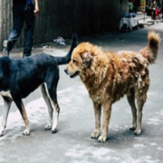
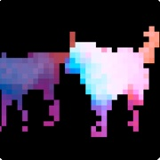

FindingThe best visual embeddings are not at the output of the network
PE core
contrastive vision–language training on images and video
output layer
best embeddingsintermediate layers
↑ image · video
probe
PE lang
for multimodal LLMs
alignment tuningdraws the hidden embeddings out
PE spatial
for dense prediction
PerceptionLM
fully open · no distillation from proprietary models
fine-grained video QA (PLM-FGQA)
Q: How does a person pour the tea into the mug?
A: The person moves the teapot up and down three times while pouring the tea into the mug.


dense token features
PCA of tokens → RGB
detectsegmenttrackdepth
2.8M human-labeled video QA + captions
PLM-VideoBench: what · where · when · how